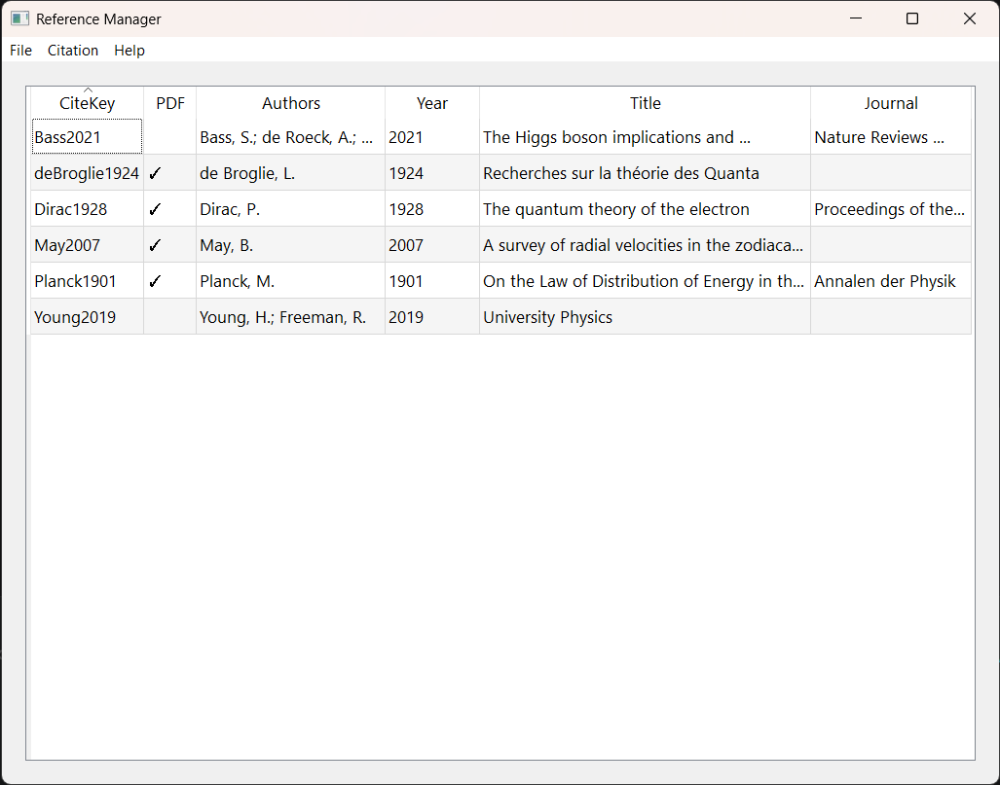
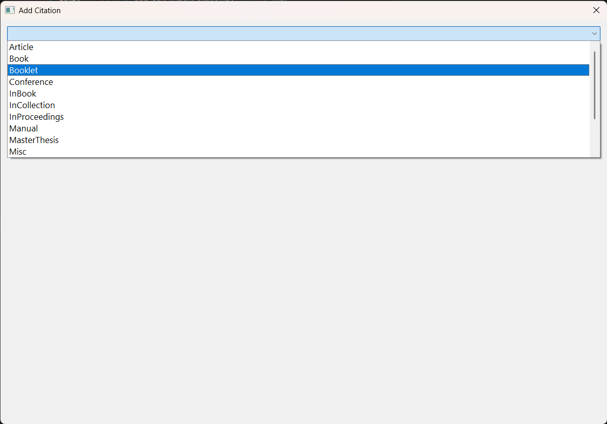
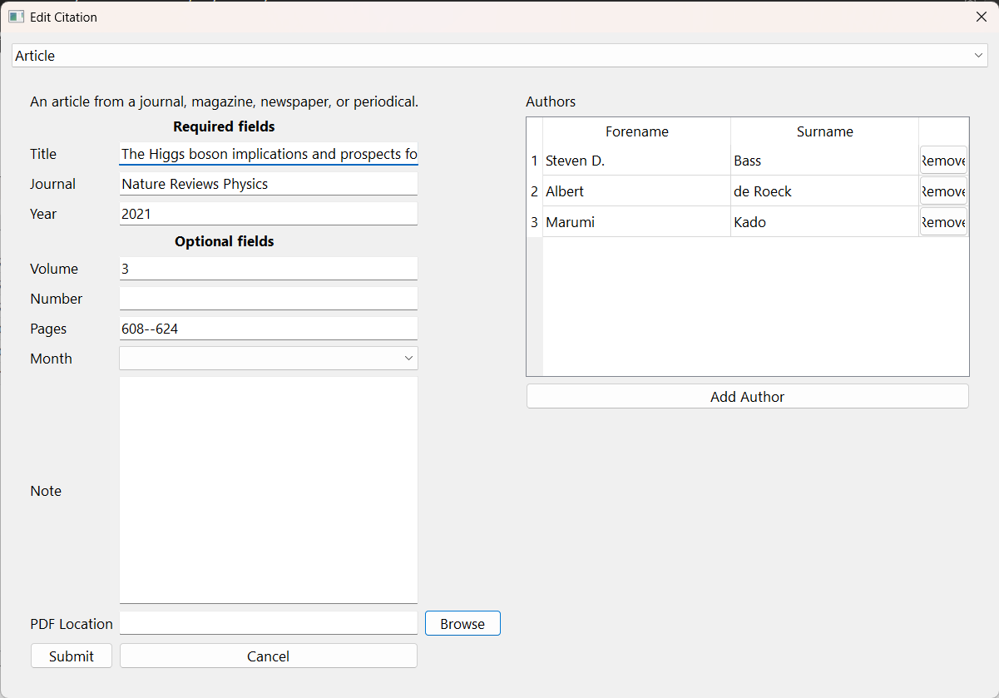

Features
BibTeX Management
Quickly build BibTeX entries with intuitive forms that highlight the fields you need.
Cross-Platform Compatibility
BibTeX Reference Manager is cross-platform, and will work on Windows, macOS and Linux.
Organise your references into libraries
Keep your references in separate libraries for better organisation.
Manage your PDFs
Attach and manage PDF files directly within your reference entries.
Download
Alpha Release
The core features are fully functional, and development is ongoing. Feedback is welcome as the tool evolves.
Download the latest Alpha version here:
DownloadScreenshots

The main interface for managing references. The citation key is at the forefront of this, making it easy to use in your LaTeX documents.

The list of citation types come from the BibTeX format, each of them with their own fields and requirements.

The form is split into the required fields for each citation type, and the optional fields. This makes it easy to create a citation without having to refer to the BibTeX documentation.
Developer Diary
1. Welcome!
Welcome to the development section of a new reference manager. I believe that a simplified, easy-to-use reference manager that directly integrates with the BibTeX format is long overdue, and other reference managers are simply getting worse. No-one wants to have to register, sign in and remember another password just to store references and PDF files in a neat repository on their local computer. I am aiming to build a lightweight reference manager that has all the features you need to read the reference materials you have and to create the BibTeX libraries for your research papers.
Since the project is built with BibTeX at the forefront of its development, it should make the process of making BibTeX files much easier. No other reference manager guides the user through what fields are required for each citation type, which ones are optional, and which ones are not used by that particular citation type. Now it should be much clearer to create a well-crafted citation to go into your LaTeX documents, or with a plugin, into Microsoft Word.
2. Alpha version
I present the initial version of the reference manager in Alpha version form. It is in a state that can be used to do everything needed for reading documents, creating BibTeX files and creating a repository to keep the documents tidy and organised. However, many more features are on the way, and the project is far from complete.
Note that testing has been done, but some bugs may occur, and some known issues exist, which will be addressed in future updates before the launch of the Beta version. You can download the latest Alpha version from the Downloads section above, and I welcome any feedback you have on the tool as it is still in development.
Contact
If you have any questions, suggestions or feedback, please feel free to contact me at bibtexrefmanager@gmail.com.